Educação ambiental
Despertar curiosidade e respeito pelo ambiente por meio de experiências próximas da natureza.
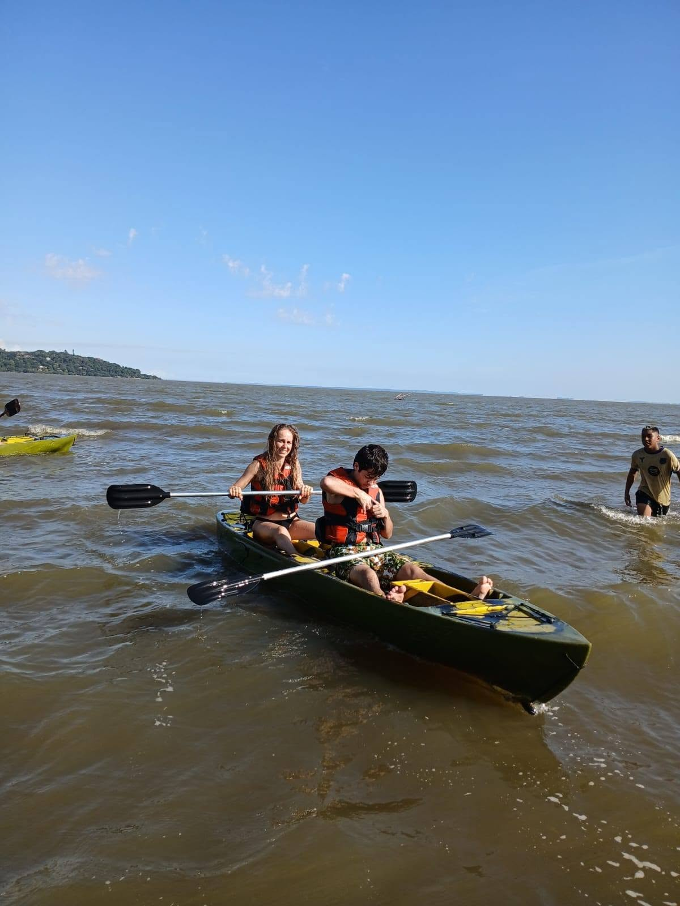
NATUREZA · EDUCAÇÃO · COMUNIDADE
Uma história de conexão com a natureza, respeito pelas águas e aprendizado compartilhado entre gerações.
01 / QUEM SOMOS
Uma iniciativa movida pelo amor à natureza e pelo desejo de compartilhar esse sentimento.
O Pitucanoa aproxima pessoas da natureza por meio de experiências, conscientização e cuidado com o meio ambiente. Sua história está ligada à relação com o Guaíba e ao desejo de transmitir às novas gerações a importância de preservar.
É um convite para conhecer, respeitar e proteger o ambiente que compartilhamos.
Descubra o que nos move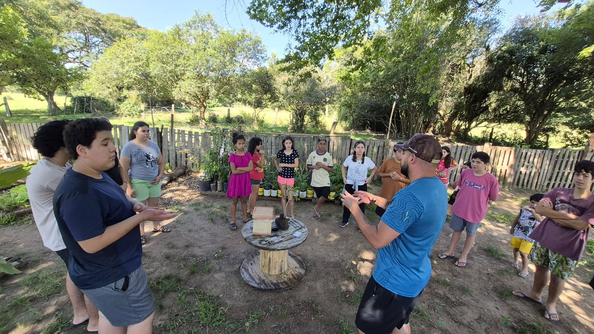
NOSSA ESSÊNCIA
“Preservar começa por pertencer. E pertencer começa por conhecer.”
02 / O QUE NOS MOVE
Acreditamos no aprendizado vivido, na força da comunidade e na responsabilidade de cuidar daquilo que é de todos.
Despertar curiosidade e respeito pelo ambiente por meio de experiências próximas da natureza.
Valorizar a relação com o Guaíba, suas paisagens e a importância de preservar esse patrimônio natural.
Reunir pessoas em torno de um propósito comum: cultivar um futuro mais consciente e sustentável.
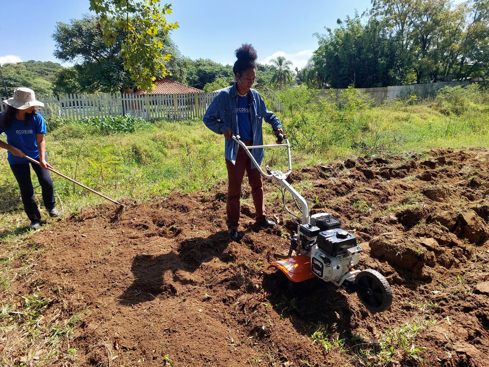
03 / APRENDER FAZENDO
Entre a água, a terra e as pessoas, cada experiência pode ser uma oportunidade de descobrir, participar e construir uma relação mais próxima com o meio ambiente.
Conheça nossos registros04 / NOSSO OLHAR
Registros de natureza, encontros e experiências que fazem parte do universo Pitucanoa.
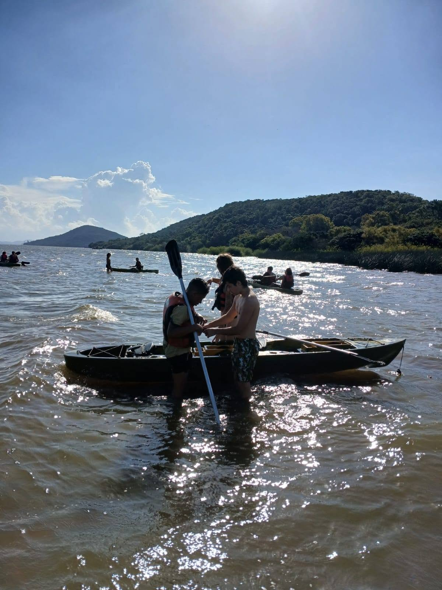
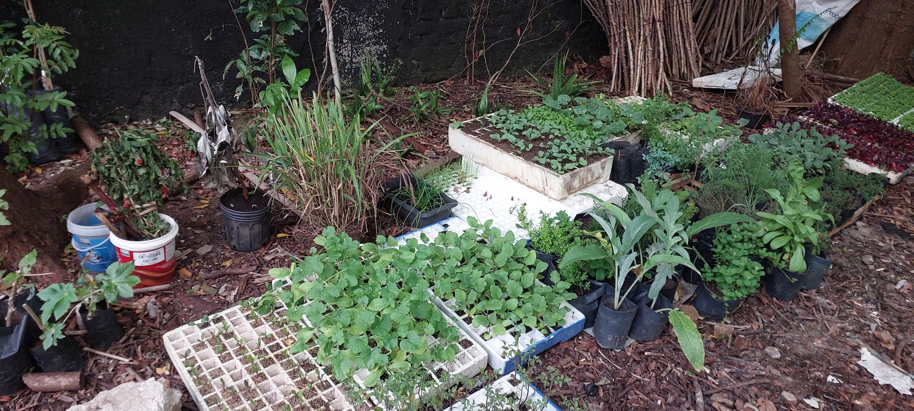
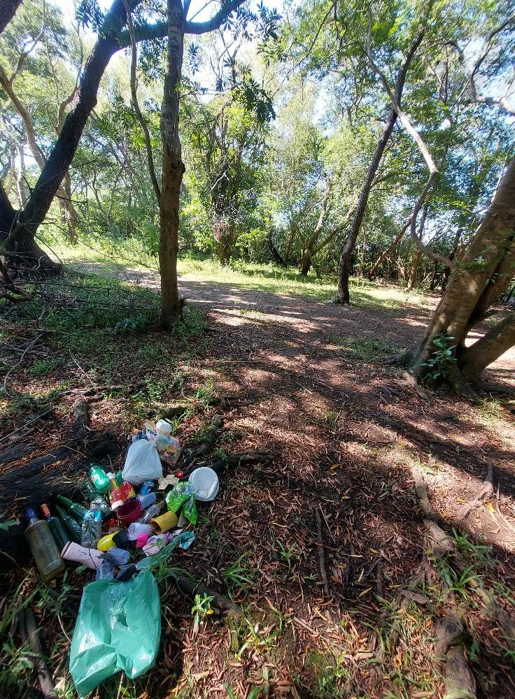
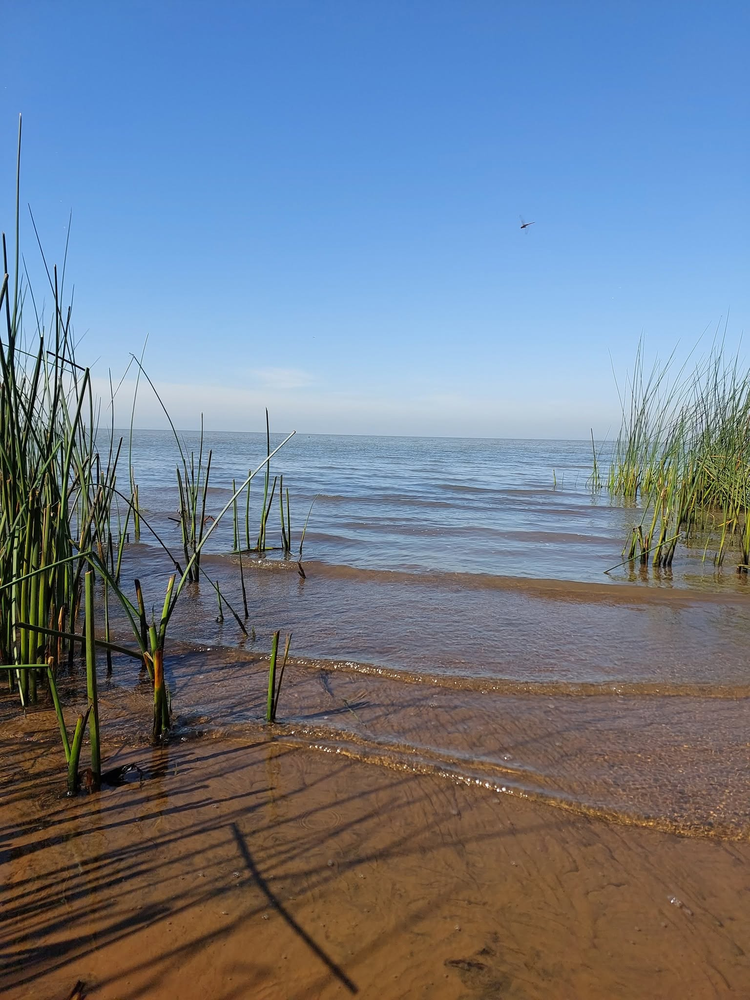

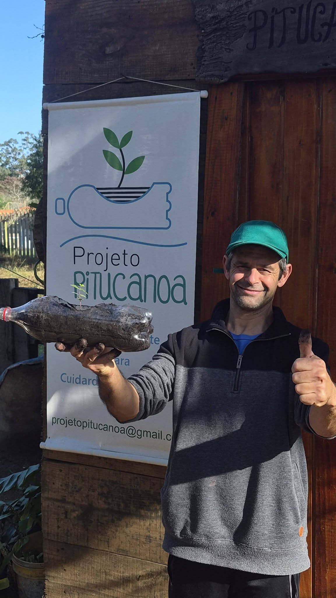
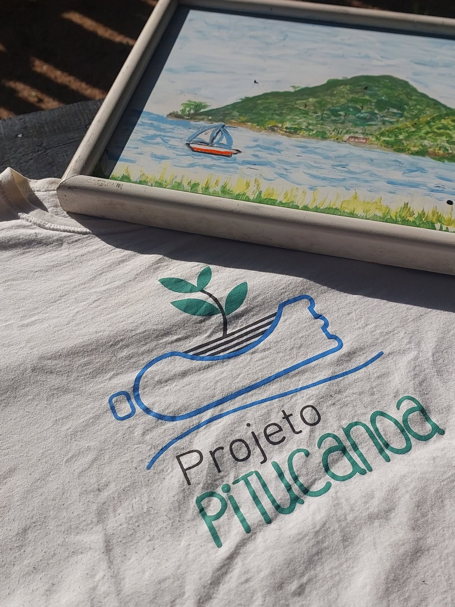
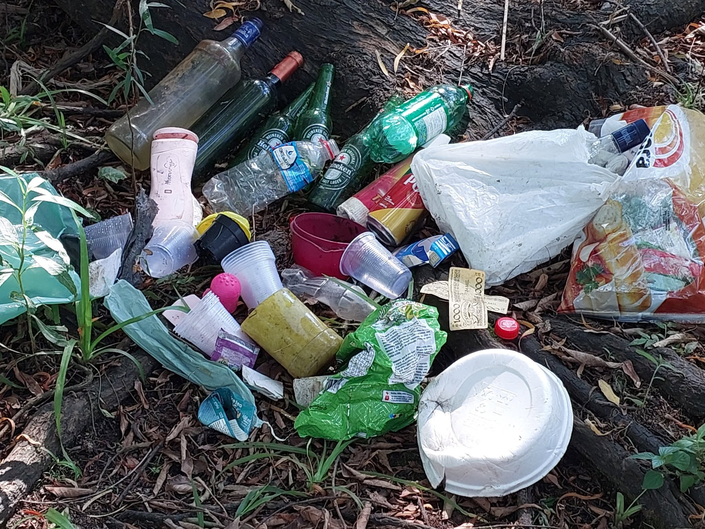
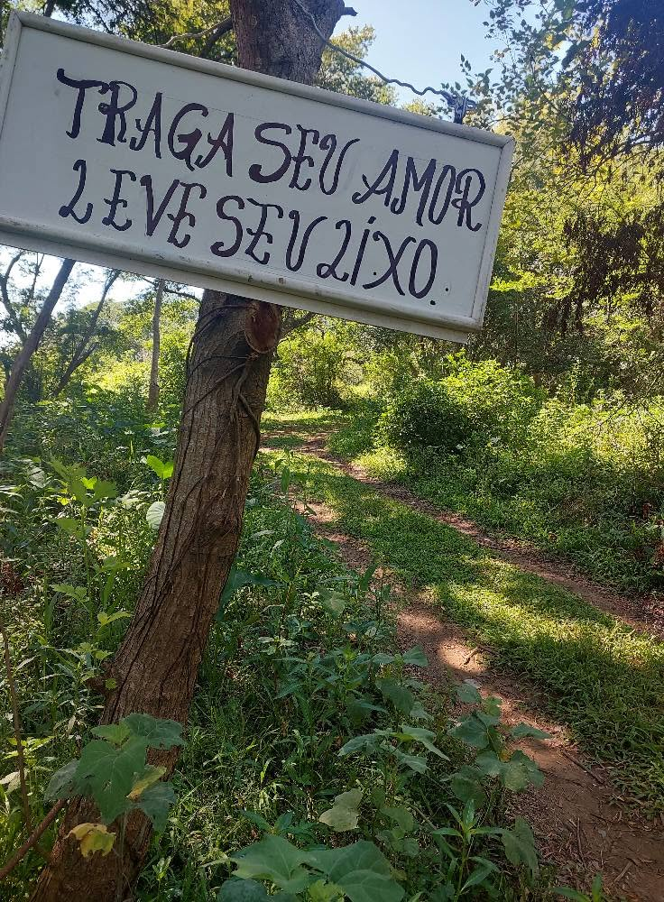
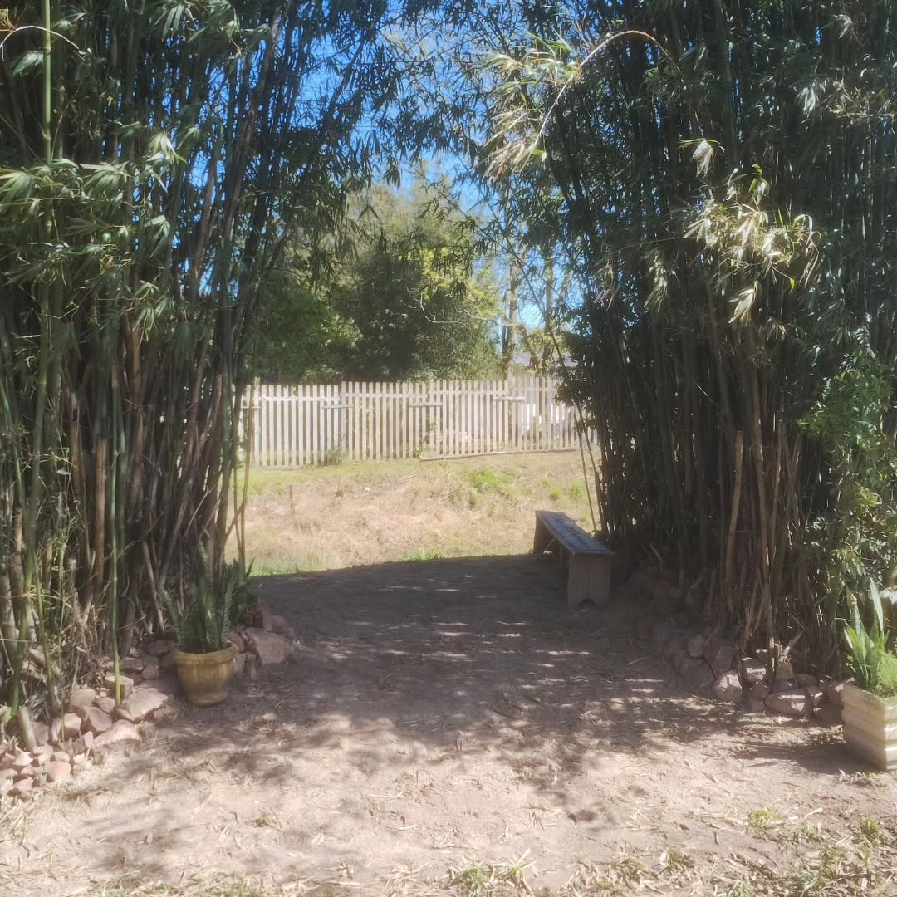
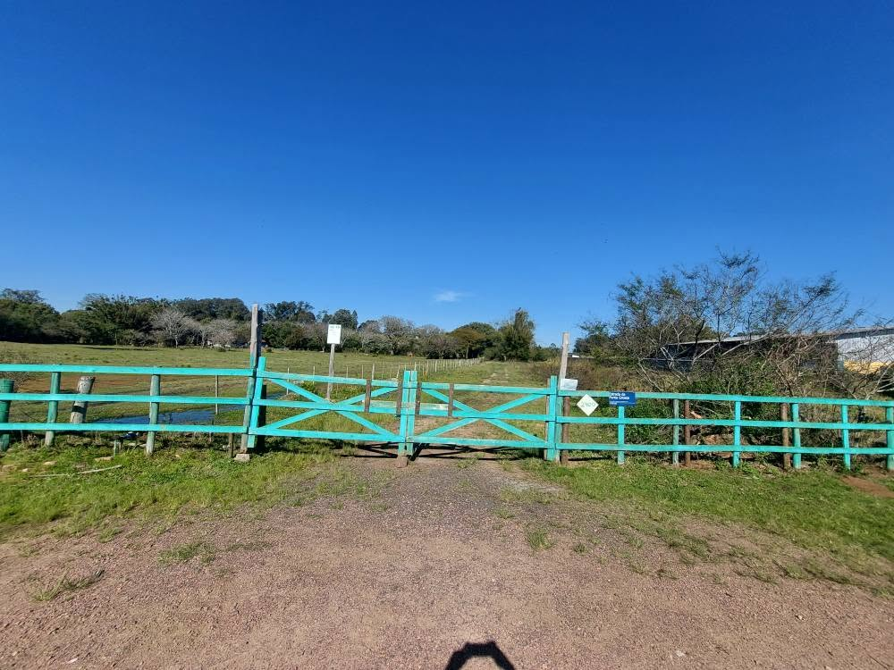
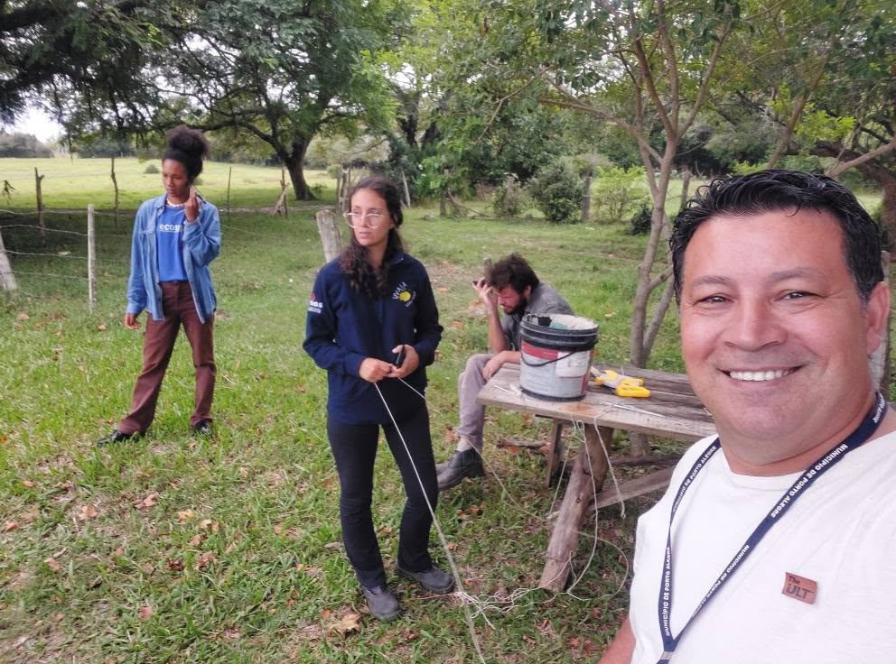
05 / FAÇA PARTE
Acompanhe o Pitucanoa nas redes sociais, conheça suas atividades e descubra formas de apoiar essa corrente de cuidado com a natureza.